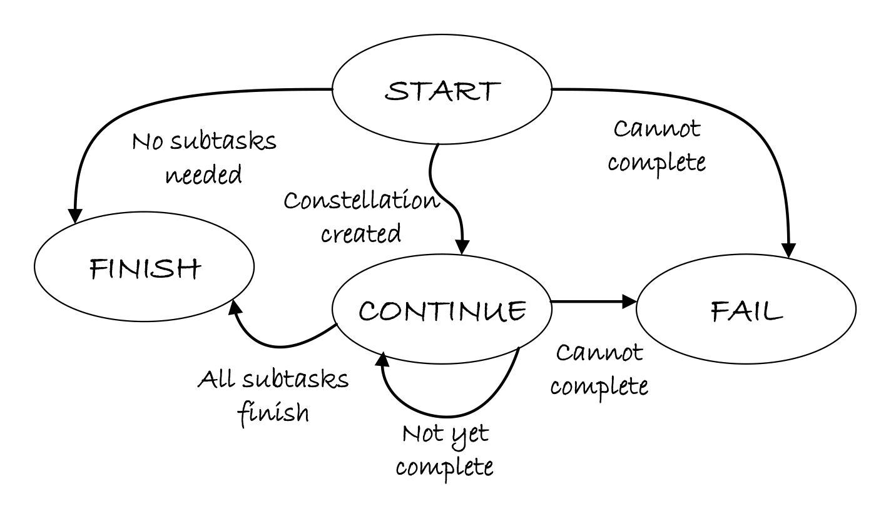

network Agent State Machine
The network Agent's finite-state machine provides deterministic lifecycle management while enabling dynamic network evolution. This FSM governs how the agent transitions between creation, monitoring, success, and failure states—ensuring predictable behavior in complex distributed workflows.
For an overview of the network Agent architecture, see Overview.
📐 State Machine Overview

Figure: Lifecycle state transitions of the network Agent showing the 4-state FSM.The network Agent implements a 4-state finite-state machine (FSM) that provides clear, enforceable structure for task lifecycle management. This design separates LLM reasoning from deterministic control logic, improving safety and debuggability.
State Space
🎯 State Definitions
State Enumeration
class networkAgentStatus(Enum):
"""network Agent states"""
START = "START"
CONTINUE = "CONTINUE"
FINISH = "FINISH"
FAIL = "FAIL"
| State | Type | Description | Entry Conditions |
|---|---|---|---|
| START | Initial | Initialize and create network | Agent instantiation, restart after completion |
| CONTINUE | Steady-State | Monitor events and process feedback | network created successfully |
| FINISH | Terminal | Successful termination | All tasks completed, no edits needed |
| FAIL | Terminal | Error termination | Irrecoverable errors, validation failures |
🚀 START State
Purpose
The START state is the initialization and creation phase where the agent: 1. Generates the initial Task network from user request 2. Validates DAG structure for correctness 3. Launches background orchestration 4. Transitions to monitoring mode
State Handler Implementation
@networkAgentStateManager.register
class StartnetworkAgentState(networkAgentState):
"""Start state - create and execute network"""
async def handle(self, agent: "networkAgent", context: Context) -> None:
# Skip if already in terminal state
if agent.status in [
networkAgentStatus.FINISH.value,
networkAgentStatus.FAIL.value,
]:
return
# Initialize timing_info
timing_info = {}
# Create network if not exists
if not agent.current_network:
context.set(ContextNames.WEAVING_MODE, WeavingMode.CREATION)
agent._current_network, timing_info = (
await agent.process_creation(context)
)
# Start orchestration in background
if agent.current_network:
asyncio.create_task(
agent.orchestrator.orchestrate_network(
agent.current_network,
metadata=timing_info
)
)
agent.status = networkAgentStatus.CONTINUE.value
elif agent.status == networkAgentStatus.CONTINUE.value:
agent.status = networkAgentStatus.FAIL.value
Execution Flow
Behaviors
| Scenario | Action | Next State |
|---|---|---|
| First Execution | Generate network via LLM | CONTINUE (success) / FAIL (error) |
| Restart Trigger | Use existing network | CONTINUE |
| Creation Failure | Log error, no network created | FAIL |
| Validation Failure | DAG contains cycles or invalid structure | FAIL |
| Already Terminal | No-op, return immediately | Same state |
Tip: Orchestration is launched as a non-blocking background task using
asyncio.create_task(). This allows the agent to transition to CONTINUE state immediately and begin monitoring for events.
Error Handling
try:
# Creation logic
agent._current_network, timing_info = (
await agent.process_creation(context)
)
except AttributeError as e:
agent.logger.error(f"Attribute error: {traceback.format_exc()}")
agent.status = networkAgentStatus.FAIL.value
except KeyError as e:
agent.logger.error(f"Missing key: {traceback.format_exc()}")
agent.status = networkAgentStatus.FAIL.value
except Exception as e:
agent.logger.error(f"Unexpected error: {traceback.format_exc()}")
agent.status = networkAgentStatus.FAIL.value
🔄 CONTINUE State
Purpose
The CONTINUE state is the steady-state monitoring and editing phase where the agent: 1. Waits for task completion/failure events from orchestrator 2. Collects batched events from the queue 3. Merges network state with latest modifications 4. Processes events and applies edits 5. Loops until all tasks complete or critical error occurs
State Handler Implementation
@networkAgentStateManager.register
class ContinuenetworkAgentState(networkAgentState):
"""Continue state - wait for task completion events"""
async def handle(self, agent: "networkAgent", context=None) -> None:
# Set editing mode
context.set(ContextNames.WEAVING_MODE, WeavingMode.EDITING)
# Collect task completion events (batched)
completed_task_events = []
# Wait for at least one event (blocking)
first_event = await agent.task_completion_queue.get()
completed_task_events.append(first_event)
# Collect other pending events (non-blocking)
while not agent.task_completion_queue.empty():
try:
event = agent.task_completion_queue.get_nowait()
completed_task_events.append(event)
except asyncio.QueueEmpty:
break
# Get latest network and merge states
latest_network = completed_task_events[-1].data.get("network")
merged_network = await self._get_merged_network(
agent, latest_network
)
# Process editing with all collected events
await agent.process_editing(
context=context,
task_ids=[e.task_id for e in completed_task_events],
before_network=merged_network
)
Execution Flow
Event Batching
Why Batch Events?
If multiple tasks complete simultaneously (e.g., parallel execution), the agent collects all pending events before processing. This enables:
- Single LLM call instead of multiple sequential calls
- Atomic modifications reflecting multiple completions
- Reduced latency and lower API costs
# Example: 3 tasks complete in quick succession
# Without batching: 3 LLM calls, 3 editing sessions
# With batching: 1 LLM call, 1 editing session processing all 3 events
State Merging
The state synchronizer merges the orchestrator's network with agent modifications:
async def _get_merged_network(
self, agent: "networkAgent", orchestrator_network
):
"""
Get real-time merged network from synchronizer.
Ensures agent processes with most up-to-date state, including
structural modifications from previous editing sessions.
"""
synchronizer = agent.orchestrator._modification_synchronizer
if not synchronizer:
return orchestrator_network
merged_network = synchronizer.merge_and_sync_network_states(
orchestrator_network=orchestrator_network
)
agent.logger.info(
f"Merged network for editing. "
f"Tasks before: {len(orchestrator_network.tasks)}, "
f"Tasks after merge: {len(merged_network.tasks)}"
)
return merged_network
Warning: State synchronization is critical. Consider this scenario:
- Task A completes → Agent edits network (adds Task C)
- Task B completes while editing is happening
- Without merging: Task B editing sees old state (no Task C)
- With merging: Task B editing sees merged state (includes Task C)
Behaviors
| Scenario | Action | Next State |
|---|---|---|
| Task Completed | Process event, apply edits | CONTINUE |
| Multiple Tasks Completed | Batch process, single edit session | CONTINUE |
| All Tasks Done | Agent decides to finish | FINISH |
| Critical Error | Exception during processing | FAIL |
| Restart Needed | New network required | START |
Transition Logic
# Agent's editing process sets status based on analysis:
if network.is_complete() and no_more_edits_needed:
agent.status = networkAgentStatus.FINISH.value
elif critical_error_occurred:
agent.status = networkAgentStatus.FAIL.value
elif new_network_needed:
agent.status = networkAgentStatus.START.value
else:
agent.status = networkAgentStatus.CONTINUE.value # Keep monitoring
✅ FINISH State
Purpose
The FINISH state represents successful termination when: - All tasks in the network have completed successfully - No further edits are necessary - User goal has been achieved
State Handler Implementation
@networkAgentStateManager.register
class FinishnetworkAgentState(networkAgentState):
"""Finish state - task completed successfully"""
async def handle(self, agent: "networkAgent", context=None) -> None:
agent.logger.info("cluster task completed successfully")
agent._status = networkAgentStatus.FINISH.value
def next_state(self, agent: "networkAgent") -> AgentState:
return self # Terminal state - no transitions
def is_round_end(self) -> bool:
return True
def is_subtask_end(self) -> bool:
return True
Characteristics
| Property | Value | Description |
|---|---|---|
| Terminal | Yes | No outgoing transitions |
| Round End | Yes | Marks execution round complete |
| Subtask End | Yes | Marks all subtasks complete |
Entry Conditions
# LLM decides to finish based on network state
{
"thought": "All tasks completed successfully. No further actions needed.",
"status": "FINISH",
"result": {
"summary": "Dataset downloaded, model trained, deployed to production",
"total_tasks": 5,
"completed": 5,
"failed": 0
}
}
Clean Termination:
The FINISH state ensures graceful shutdown with:
- All resources released
- Final results aggregated
- Memory logs persisted
- Success metrics recorded
❌ FAIL State
Purpose
The FAIL state represents error termination when: - Irrecoverable errors occur during creation or editing - DAG validation fails - Critical system failures prevent continuation
State Handler Implementation
@networkAgentStateManager.register
class FailnetworkAgentState(networkAgentState):
"""Fail state - task failed"""
async def handle(self, agent: "networkAgent", context=None) -> None:
agent.logger.error("cluster task failed")
agent._status = networkAgentStatus.FAIL.value
def next_state(self, agent: "networkAgent") -> AgentState:
return self # Terminal state - no transitions
def is_round_end(self) -> bool:
return True
def is_subtask_end(self) -> bool:
return True
Failure Scenarios
| Scenario | Trigger | Recovery |
|---|---|---|
| Creation Failure | LLM cannot decompose request | User reformulates request |
| Validation Failure | Generated DAG has cycles | Agent retries or manual fix |
| Critical Exception | Unexpected system error | Check logs, restart agent |
| Timeout | Processing exceeds limits | Increase timeout or simplify task |
Error Propagation
# Example error chain:
try:
network = await agent.process_creation(context)
except Exception as e:
agent.logger.error(f"Creation failed: {e}")
agent.status = networkAgentStatus.FAIL.value
# State machine handles transition to FAIL state
Important: Both FINISH and FAIL states are terminal — they have no outgoing transitions. This ensures the agent cannot accidentally resume execution after completion or failure.
🔀 State Transitions
Transition Matrix
| From ↓ / To → | START | CONTINUE | FINISH | FAIL |
|---|---|---|---|---|
| START | ❌ | ✅ (success) | ❌ | ✅ (error) |
| CONTINUE | ✅ (restart) | ✅ (loop) | ✅ (done) | ✅ (error) |
| FINISH | ❌ | ❌ | ✅ (stay) | ❌ |
| FAIL | ❌ | ❌ | ❌ | ✅ (stay) |
Transition Rules
class networkAgentState(AgentState):
"""Base state for network Agent"""
def next_state(self, agent: "networkAgent") -> AgentState:
"""Determine next state based on agent status"""
status = agent.status
state = networkAgentStateManager().get_state(status)
return state
State Manager
class networkAgentStateManager(AgentStateManager):
"""State manager for network Agent"""
_state_mapping: Dict[str, Type[AgentState]] = {}
@property
def none_state(self) -> AgentState:
return StartnetworkAgentState()
The state manager uses the @register decorator pattern to automatically register state classes. For more details on the overall agent architecture, see network Agent Overview.
@networkAgentStateManager.register
class StartnetworkAgentState(networkAgentState):
@classmethod
def name(cls) -> str:
return networkAgentStatus.START.value
📊 State Metrics
Execution Timeline
Typical Duration
| State | Typical Duration | Factors |
|---|---|---|
| START | 2-5 seconds | LLM response time, validation complexity |
| CONTINUE | Variable (10s - 10min) | Task execution time, parallelism |
| FINISH | < 1 second | Logging and cleanup |
| FAIL | < 1 second | Error logging |
🛡️ Error Handling
Exception Hierarchy
# START State Error Handling
try:
network, timing = await agent.process_creation(context)
except AttributeError as e:
# Missing attribute (e.g., context field)
agent.logger.error(f"Attribute error: {e}")
agent.status = networkAgentStatus.FAIL.value
except KeyError as e:
# Missing key in dictionary
agent.logger.error(f"Missing key: {e}")
agent.status = networkAgentStatus.FAIL.value
except Exception as e:
# Catch-all for unexpected errors
agent.logger.error(f"Unexpected error: {e}")
agent.status = networkAgentStatus.FAIL.value
Recovery Strategies
| Error Type | State | Recovery Action |
|---|---|---|
| Temporary Network Failure | CONTINUE | Retry with backoff |
| Invalid LLM Response | CONTINUE | Re-prompt with examples |
| DAG Cycle Detected | START | Fail fast, require user intervention |
| Task Execution Timeout | CONTINUE | Mark task failed, continue network |
| Critical System Error | Any | Transition to FAIL immediately |
🔍 State Inspection
Agent State Query
# Check current state
current_state = agent.current_state
print(f"State: {current_state.name()}")
# Check if terminal
if current_state.is_round_end():
print("Agent execution completed")
# Get status
status = agent.status
print(f"Status: {status}") # "START", "CONTINUE", "FINISH", or "FAIL"
State History
The agent maintains state transition history in memory logs:
{
"step": 1,
"state": "START",
"timestamp": "2024-01-01T10:00:00",
"network_id": "network_abc123"
}
💡 Best Practices
State Machine Design:
- Keep states focused: Each state should have a single, clear responsibility
- Minimize transitions: Fewer transitions = simpler debugging
- Log all transitions: Record state changes with context
- Handle errors explicitly: Don't rely on implicit error propagation
- Use terminal states: Ensure execution cannot resume accidentally
Common Pitfalls to Avoid:
- Infinite loops in CONTINUE: Always check termination conditions
- Missing error handling: Unhandled exceptions → unpredictable state
- Blocking operations: Use async/await to prevent deadlocks
- State pollution: Don't modify agent state outside state handlers
Example: State Transition Logging
agent.logger.info(
f"State transition: {old_state.name()} → {new_state.name()}"
)
🔗 Related Documentation
- Overview — network Agent architecture
- Prompter Details — Prompter implementation
- Command Reference — MCP tool specifications
- Task network — DAG model
- network Orchestrator — Task execution engine
📋 State Interface Reference
AgentState Base Class
class AgentState(ABC):
"""Base interface for agent states"""
@abstractmethod
async def handle(self, agent, context) -> None:
"""Execute state-specific logic"""
pass
def next_state(self, agent) -> AgentState:
"""Determine next state based on agent status"""
pass
def next_agent(self, agent):
"""Get next agent (for multi-agent systems)"""
return agent
@abstractmethod
def is_round_end(self) -> bool:
"""Check if this state marks round end"""
pass
@abstractmethod
def is_subtask_end(self) -> bool:
"""Check if this state marks subtask end"""
pass
@classmethod
@abstractmethod
def name(cls) -> str:
"""State identifier"""
pass